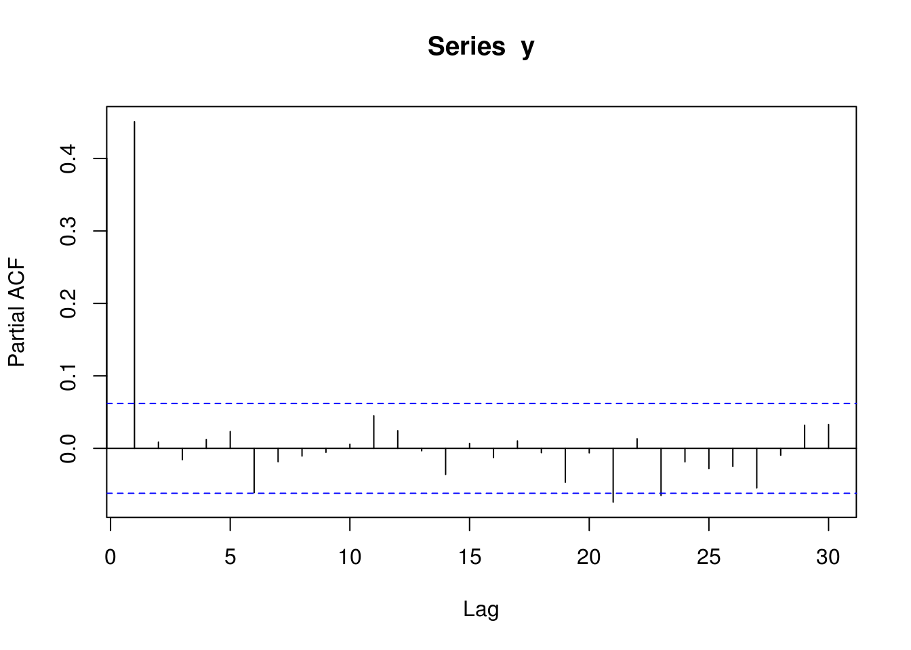
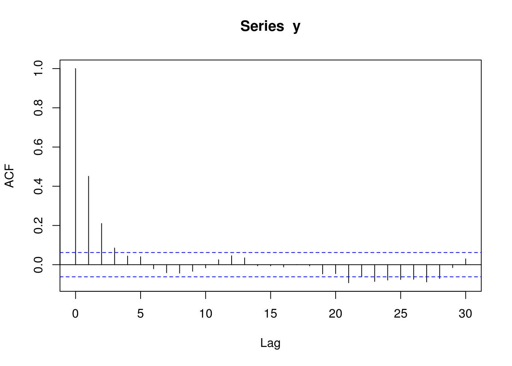
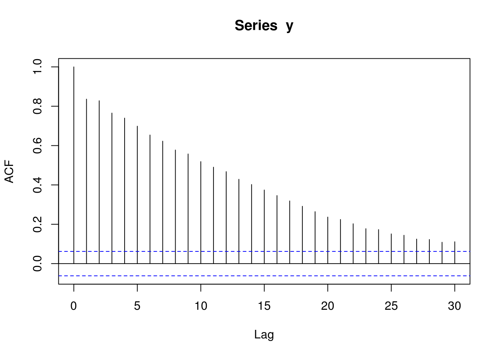
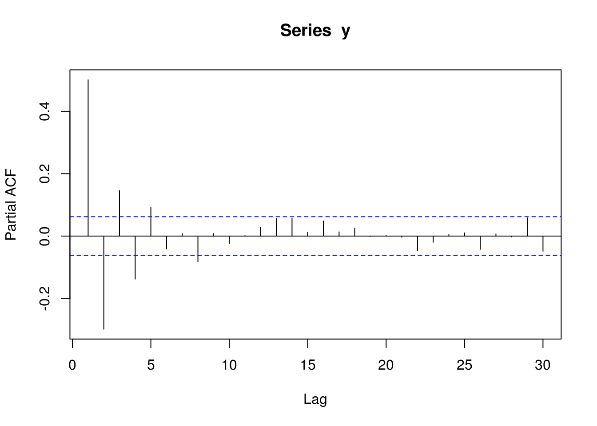
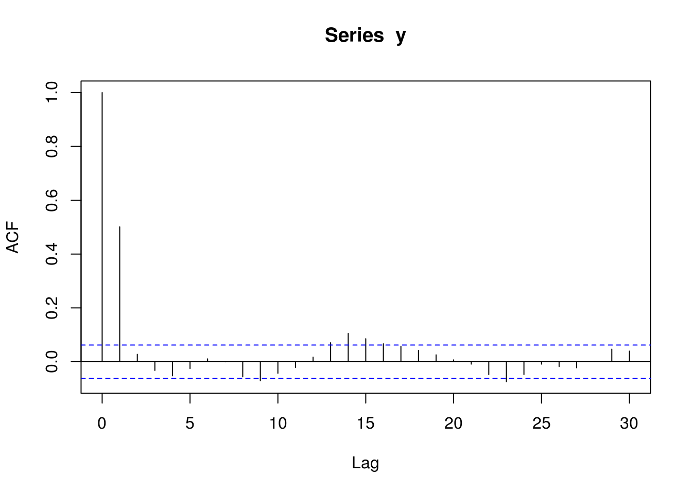
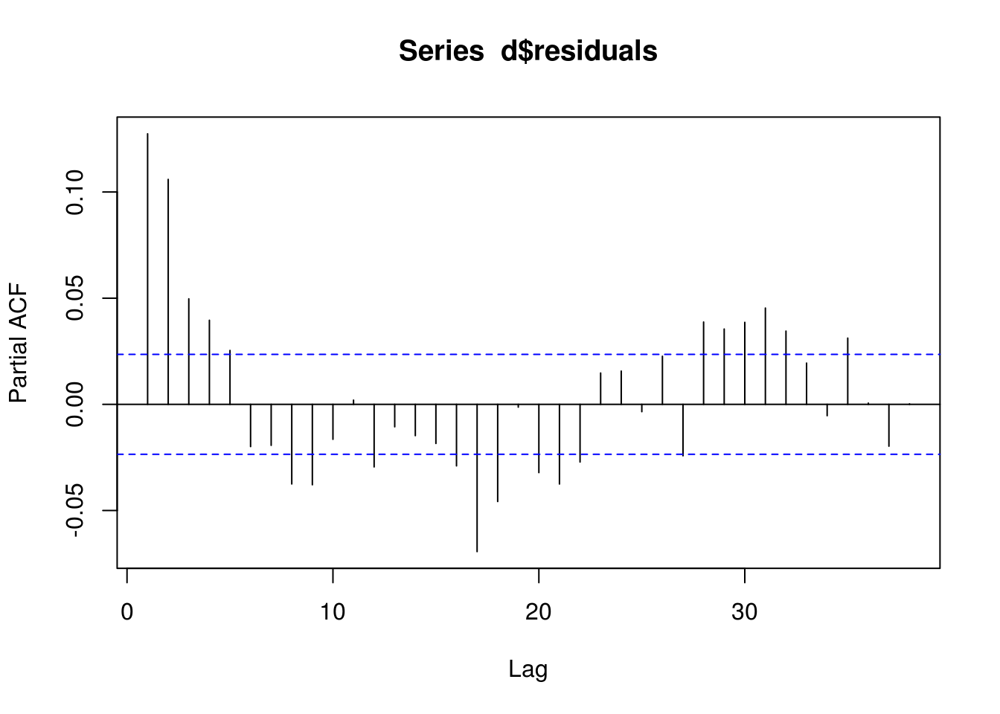
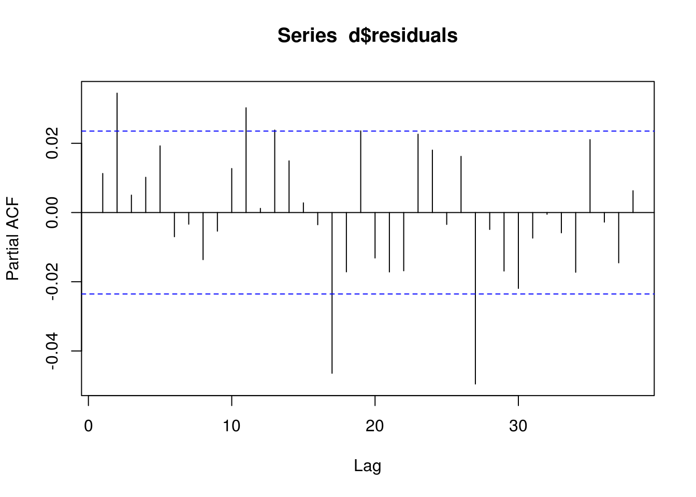

1 Reference
1.1 Scope of this course
When dealing with longitudinal data, there are two kinds of analyses that can be performed.
“Time series” analyses generally deal with one variable. The aim is to then predict the future only using the previous observations. A common example would be to predict tomorrow’s temperature, using today’s and yesterday’s temperature as exposures. We will not be focusing on these kinds of analyses in this course.
“Regression analyses” are very similar to ordinary regressions that you have been working with for many years. The only difference is that they have more advanced data structures that your current methods cannot handle. For example, if you want to see how the number of tuberculosis patients (outcome) is affected by the number of immigrants to Norway (exposure) over a 20 year period, then the number of patients in each year might be associated with each other, which might break assumptions of the regression models that you normally use (independent residuals). To account for the advanced structure of the data (correlation between different years) we will use more advanced regression techniques. This is what we will be focusing on in this course.
To recap: this course will let you run “normal regressions” in situations where the data structure would ordinarily prohibit you from running regression models. These situations mostly pertain to clusters of correlated data.
1.2 Introduction
There are two important definitions in this course:
- Panel data
- Autocorrelation
Panel data is a set of data with measurements repeated at equally spaced points. For example, weight data recorded every day, or every week, or every year would be considered panel data. A person who records three weight measurements randomly in 2018 would not be considered panel data.
When you have panel data, autocorrelation is the correlation between subsequent observations. For example, if you have daily observations, then the 1 day autocorrelation is the correlation between observations 1 day apart, and likewise the 2 day autocorrelation is the correlation between observations 2 days apart.
In this course we will consider 5 scenarios where we have multiple observations for each geographical area:
- Panel data: One geographical area, no autocorrelation
- Panel data: One geographical area, with autocorrelation
- Not panel data: Multiple geographical areas
- Panel data: Multiple geographical areas, no autocorrelation
- Panel data: Multiple geographical areas, with autocorrelation
Note, the following scenario can be covered by standard regression models:
- Multiple geographical areas, one time point/observation per geographical area
1.3 Method summary
1.3.1 Panel data: One geographical area, no autocorrelation
// STATA CODE
glm y yearminus2000 dailyrainfall cos365 sin365, family(poisson)# R CODE
fit1 <- glm(y~yearMinus2000 + dailyrainfall + sin365 + cos365, data=d, family=poisson())
residuals(fit1, type = "response")1.3.2 Panel data: One geographical area, with autocorrelation
// STATA CODE
glm y yearminus2000 cos365 sin365, family(poisson) vce(robust)# R CODE
fit <- MASS::glmmPQL(y~yearMinus2000+sin365 + cos365, random = ~ 1 | ID,
family = poisson, data = d,
correlation=nlme::corAR1(form=~dayOfSeries|ID))
r <- residuals(fit1, type = "normalized")
pacf(r)1.3.3 Not panel data: Multiple geographical areas
// STATA CODE
meglm y x yearMinus2000 || fylke:, family(poisson)# R CODE
fit <- lme4::glmer(y~x + yearMinus2000 + (1|fylke),data=d,family=poisson())1.3.4 Panel data: Multiple geographical areas, no autocorrelation
// STATA CODE
meglm y yearminus2000 cos365 sin365 || fylke:, family(poisson)# R CODE
fit <- MASS::glmmPQL(y~yearMinus2000+sin365 + cos365, random = ~ 1 | fylke,
family = poisson, data = d)
r <- residuals(fit1, type = "normalized")
pacf(r)1.3.5 Panel data: Multiple geographical areas, with autocorrelation
// STATA CODE
meglm y yearminus2000 cos365 sin365 || fylke:, family(poisson) vce(robust)# R CODE
fit <- MASS::glmmPQL(y~yearMinus2000+sin365 + cos365, random = ~ 1 | fylke,
family = poisson, data = d,
correlation=nlme::corAR1(form=~dayOfSeries|fylke))
r <- residuals(fit1, type = "normalized")
pacf(r)1.4 Identifying your scenario
1.4.1 Step 1: Do you have panel data?
This step should be fairly simple. If your data has equally spaced time intervals between them, you have panel data.
1.4.2 Step 2: Do you have multiple geographical areas?
Again, fairly simple, just look at your data.
1.4.3 Step 3: Do you have autocorrelation?
Firstly, you must run a model pretending that you do not have autocorrelation.
You then inspect the residuals from the model and see if autocorrelation exists. This is done with two statistical procedures: pacf (for autoregressive models, the most common type of autocorrelation), and acf (for moving average models, a less common type of autocorrelation).
1.4.4 AR(1) data
y <- round(as.numeric(arima.sim(model=list("ar"=c(0.5)), rand.gen = rnorm, n=1000)))With autoregressive data, a pacf plot contains a number of sharp significant lines, indicating how many subsequent observations have autocorrelation. i.e. if one line is significant, it means that each observation is only correlated with its preceeding observation (AR(1)). If two lines are significant, it means that each observation is correlated with its two preceeding observations (AR(2)). The following plot represents AR(1) data.
pacf(y)
With autoregressive data, an acf plot contains a number of decreasing lines. The following acf plot represents some sort of AR data. Note that the acf plot displays lag 0 (which is pointless and can be ignored), while the pacf plot does not.
acf(y)
1.4.5 AR(2) data
y <- round(as.numeric(arima.sim(model=list("ar"=c(0.5,0.4)), rand.gen = rnorm, n=1000)))The following pacf plot represents AR(2) data. This means that each observation is correlated with its two preceeding observations (AR(2)).
pacf(y)
The following acf plot represents some sort of AR data:
acf(y)
1.4.6 MA(1) data
y <- round(as.numeric(arima.sim(model=list("ma"=c(0.9)), rand.gen = rnorm, n=1000)))With moving average data, a pacf plot contains a number of decreasing lines. The following pacf plot represents some sort of MA data.:
pacf(y)
With moving average data, an acf plot contains a number of sharp significant lines, demarking how many subsequent observations have autocorrelation. i.e. if one line is significant, it means that each observation is only correlated with its preceeding observation. If two lines are significant, it means that each observation is correlated with its two preceeding observations. The following plot represents MA(1) data. Note that the acf plot displays lag 0 (which is pointless and can be ignored), while the pacf plot does not.
acf(y)
1.4.7 MA(2) data
y <- round(as.numeric(arima.sim(model=list("ma"=c(0.9,0.6)), rand.gen = rnorm, n=1000)))The following pacf plot represents some sort of MA data.
pacf(y)
The following acf plot represents MA(2) data. This means that each observation is correlated with its two preceeding observations.
acf(y)